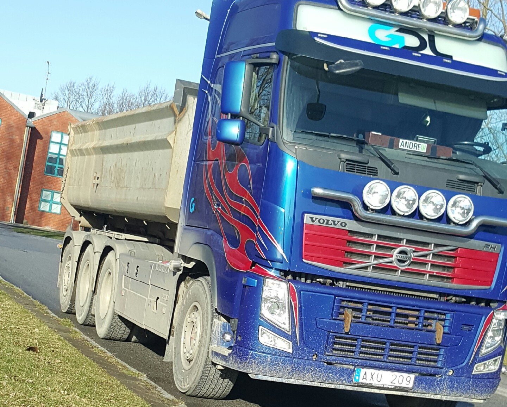
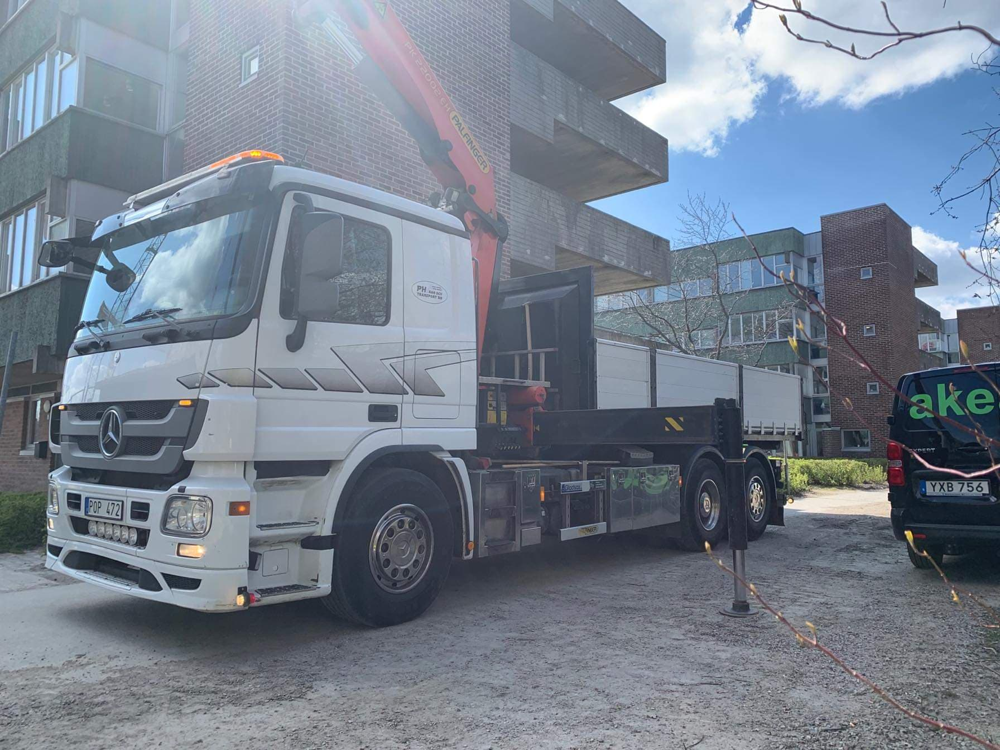
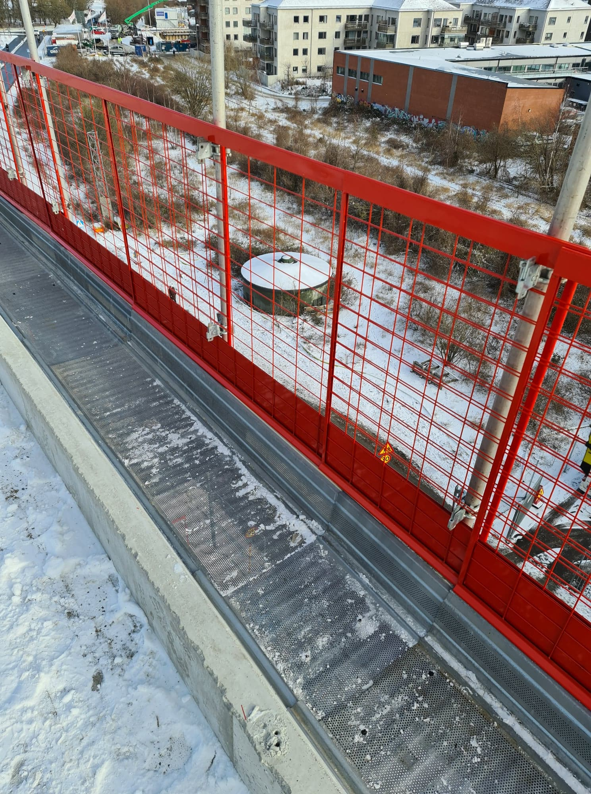

Concrete transporter
This was a demanding work. The hours where never the same but the work sure was. Our top priority was to solve the tasks we were assigned before the concrete started to get dry.

Material Transporter
I met a lot of wonderful people. I experienced good times, and bad times. Sunny days and rainy days. A wonderful experience, but nothing I want to do the rest of my life.
Crane-mounted Truck
I had never operated a crane before. Getting the chance and trust to try it was a wonderful thing. The work included keeping in touch with clients. Repairing roads. Delivering containers. Fixing the neighbors backyard. It sure was fun for a moment.
Safety-constructer
Being up at those heights were sscary at first. But it was more freightening how quick you got used to it. It was a dangerous job.
Salesman
I did not get an honest chance. Although the job I did try, was a valuable one. Doing the cold calls is hardly anything to hype for. But the continous contact with clients, creating powerpoints and adapting presentations to clients. That is something I trully enjoyed.